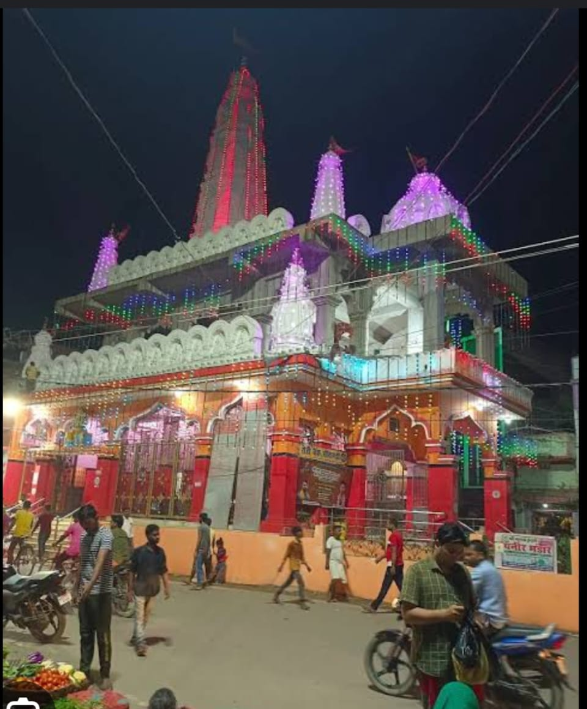
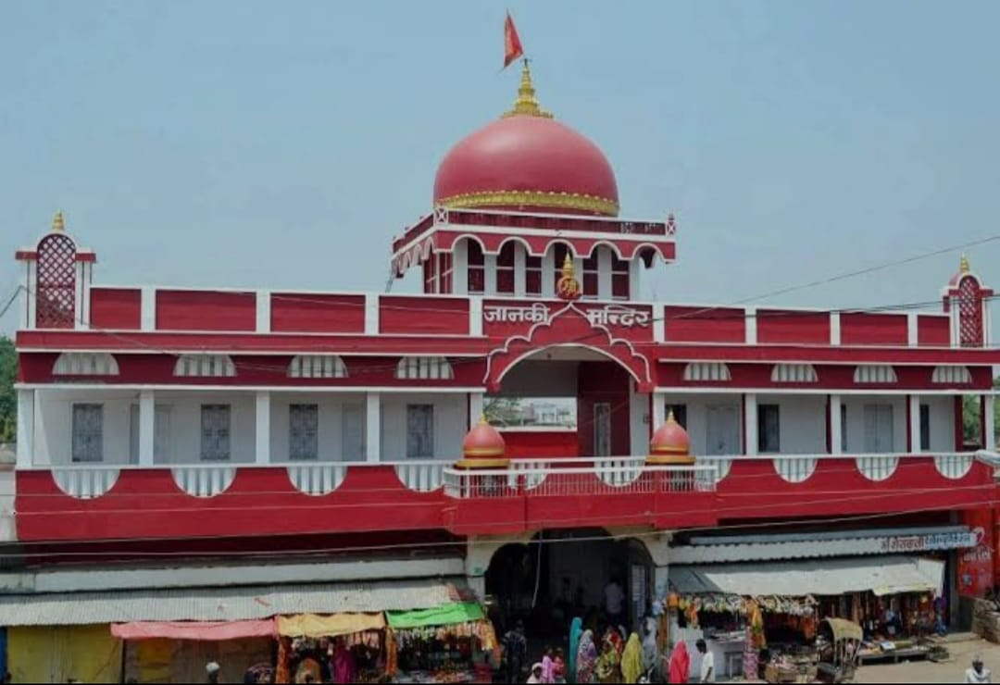
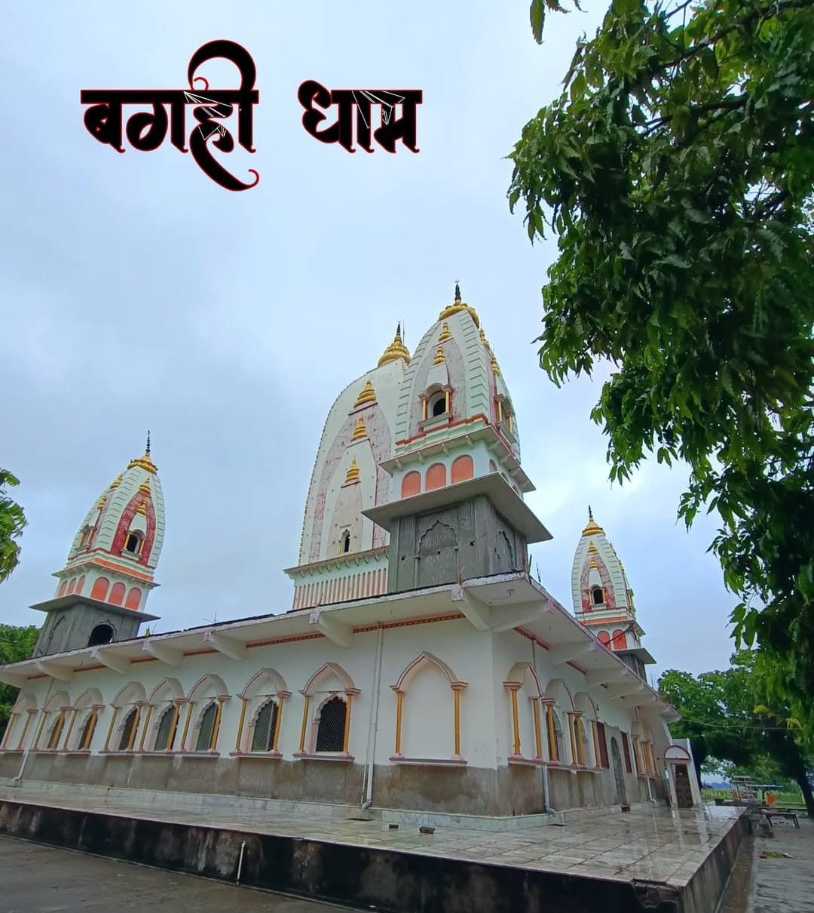
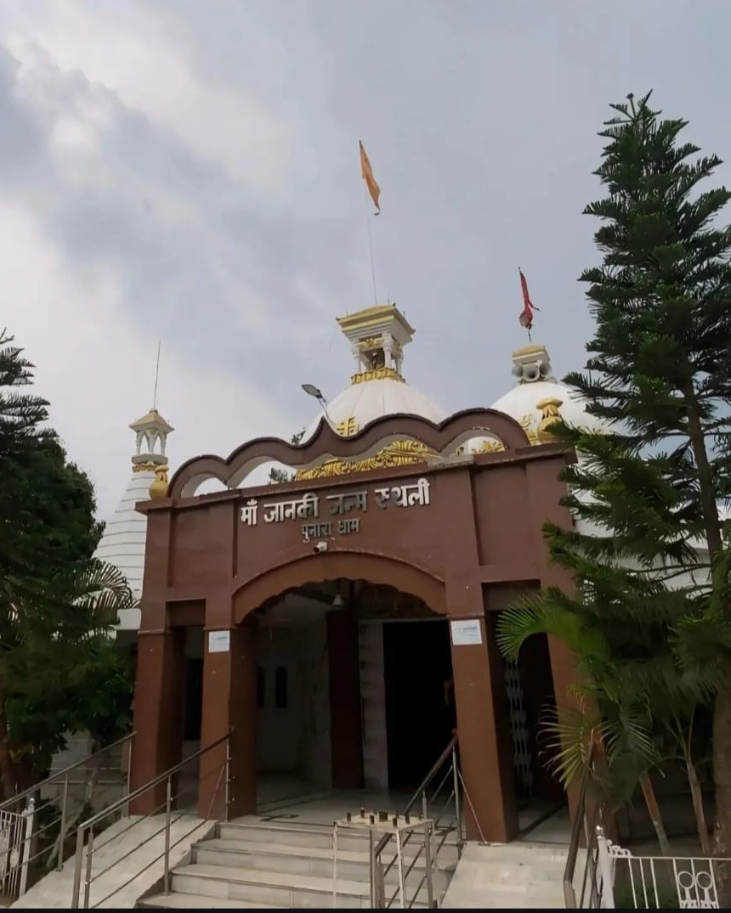
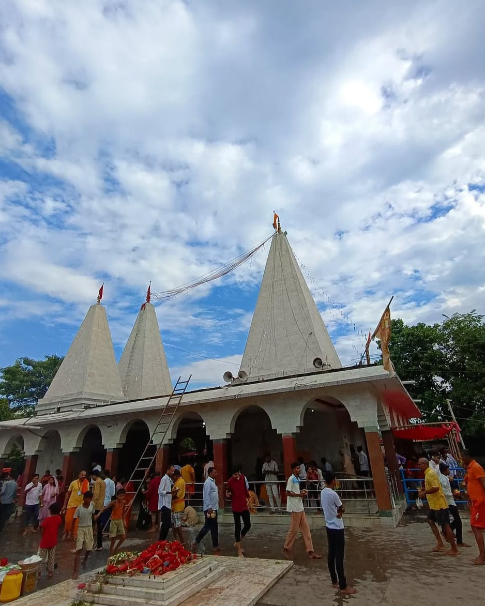

Shiv Mandir, Rajopatti, Sitamarhi is a revered temple dedicated to Lord Shiva. It is a popular spiritual site where devotees gather, especially during Maha Shivaratri, to offer prayers and seek blessings. The temple holds cultural and religious significance in the region.

Janki Sthan Temple is a famous temple in Sitamarhi, Bihar, dedicated to Goddess Sita, who is believed to have been born here. It is a major pilgrimage site, attracting devotees seeking blessings and exploring its historical and spiritual significance..

Bagahi Math is a historic religious site in Sitamarhi, Bihar, known for its spiritual significance and serene environment. It serves as a place of worship and meditation for devotees, attracting visitors seeking peace and divine blessings.

Punaura Temple, located near Sitamarhi, Bihar, is a revered site dedicated to Goddess Sita. It is believed to be her birthplace and holds immense religious significance. The temple attracts numerous devotees, especially during the festival of Ram Navami.

Haleshwar Sthan is a sacred Shiva temple located in Sitamarhi, Bihar. It is believed to have been built by King Janak before Goddess Sita's marriage. The temple holds great religious significance, especially during Maha Shivaratri.